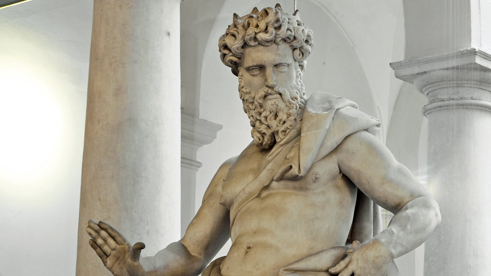

The Archaic period
700-480 B.C.The Archaic period is the first period in the history of ancient Greek art, which began in 700 BC. and ended in 480 BC. The term "archaic" is a Greek term which means "early". It is used to describe many developments in art that took place during the early stages of Greek culture. Thus, sculptural works during this period indicate the initial skills that Greek sculptors displayed. This stage is a stationary stage on which plays were created with no movement or flexibility. Their statues were characterized by symmetry and rigidity of form. Important features of the human figure were emphasized. The male figures were nude, the sculpted figures known as the Kouros figures were nude because the athletes performed naked during the Olympic Games. Their left foot was in front. On the other hand, the female sculpted figures called "Kore" (maiden) were fully clothed. Poses for their sculpted figures included standing, kneeling, and sitting postures. The Greeks mainly sculpted the figures of gods and goddesses in the likeness of men, women and children. Contemporary sculptors rarely use the Kouros and Kore sculpture types. Due to the lack of skill development, their sculpted figures were not realistically depicted. In their desire to see smiles, the Greeks gave their lips a curved expression, which art critics call the "archaic smile." It was an artificially expressed form of a smile on the face of the sculptures as a result of the lack of skill in modeling. The first era of historical Greek sculpture was influenced by the statue of ancient Egypt. Traditional Greek sculpture of the time was considered unnatural and inflexible. The body of the sculpture of this time is criticized for the fact that they are assembled as if from pieces.
Classical period
480-323 B.C.
This is the second period in the history of Greek art. During this period, Greek art reached its greatest peak. Sculpture was marked by flexibility and a comprehensive study of the representation of movement. Critical observation and study of human anatomy led to the creation of sculptural figures in complete realism and in their correct proportions. The Classic period are some of the most widely known ancient sculptures. Stone and bronze became popular material choices during this time. These statues were given "many active poses" by the ancient Greeks. Ancient Greek sculpture of the classical period may have focused on movement, but the faces of these statues were largely stoic. It was believed that only barbarians showed their emotions in public. Humanity was shown idealistically in ancient Greek artistic sculptures.

Hellenistic period
323-1 B.C.This is the third and final period in the history of ancient Greek art, which began in 323 BC. and ended in the 1st century. AD The term "Hellenistic" refers to the arts developed under the influence of Greece over the countries of the Mediterranean during the reign of Alexander the Great. Within the cultural centers of the Hellenistic world, a number of academies emerged that dealt seriously with a wide range of fields, including art, literature, and medicine. Canons were designed to judge quality in sculpture. This led to an increased interest in systems of proportion in sculpture. The works were characterized by realism, extreme emotions, extravagant gestures, musculature and forms. Movement dynamics are precise, the wind through the wing feathers and the folds of the outfit can be seen in indescribable detail. The sculptors explored three-dimensional movements. One of the earliest developments in sculpture during this period was the great interest in the portrait. Individual resemblance was absent in both archaic and classical sculpture, but was dominant in Hellenistic sculpture. Not everyone sees the differences between the ancient Greek sculpture of the classical period and the traditional Greek art sculptures of the Hellenistic period.